← 返回阅读库 · 原论文目录
论文讲解阅读文档 · 表征学习 · v172
MoCo Momentum Contrast Learning[1911.057222003.04297]
视频时长 00:09:59；讲解文字 4,802 字符；提取讲解画面 29 张。按视频原顺序阅读，每段文字保留时间戳。
文字来自整段视频的自动语音转写，按自然停顿分段，并与 PPT / 论文页面 / 演示画面对齐。未将讲解压缩为摘要；术语、数字和口述公式请结合画面及原论文核对。 阅读稿已校正规范部分明确术语误识别；原始逐字稿和每处修改记录另行保留。
讲解画面为源视频截图（640×360），不是可编辑 PPT 文件。全片按每秒 2 帧扫描内容变化，逐步展开页保留；连续动画保留代表画面。清晰度受源视频限制。
下载完整资料包 · 含离线 HTML、PDF、Word、全部 PPT 画面和字幕。
原论文与材料
Improved Baselines with Momentum Contrastive Learning · 下载完整 PDF（3 页）
Momentum Contrast for Unsupervised Visual Representation Learning · 下载完整 PDF（12 页）
按时间阅读
00:00:00–00:00:19 · 画面 001
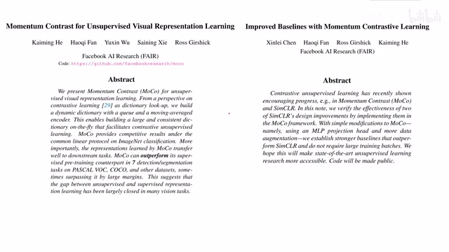
00:00:00–00:00:19 · 画面 001大家好,今天我们来介绍两篇论文 Momentum Contrast for Unsupervised Visual Representation Learning 和它后续的改进 Improved Baselines with Momentum Contrastive Learning，这个就是我们熟悉的 MOCO。Moco 呢是一种典型的 Contrastive Unsupervised Learning，那么因为我们之前已经介绍了很多这个 Contrastive Learning 还有 Self-Supervised Learning 这些模型了，所以呢我们在今天视频中呢就迅速的介绍一下 Moco 它的实践的原理，它汇报的结果以及它的改进 MoCo V2。那么在 Moco 提出的时候，我们现在手头有哪些 Contrastive Learning 的手段呢，主要呢这里有两种。
00:00:19–00:00:37 · 画面 002
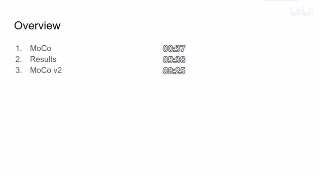
00:00:19–00:00:37 · 画面 00200:00:37–00:01:43 · 画面 003
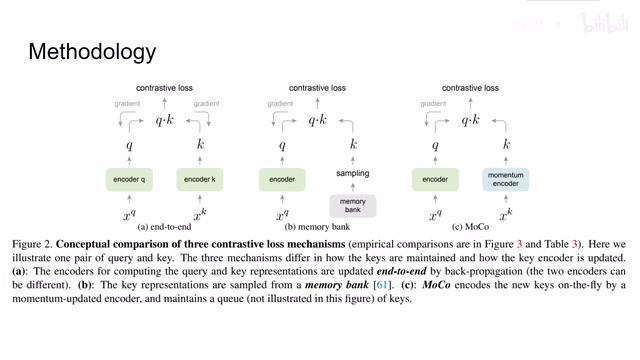
00:00:37–00:01:43 · 画面 003第一种呢是这种 end to end，也就是我一个 sample 经过不同的图像的增强作为 query 和 key 放到两个 encoder 里面，然后呢算相似程度，它们的相似程度是高的，那么不同样本之间产生的 query 和 key 它们的相似程度呢是低的，这样呢就可以做这个 contrastive loss。那么这个方法呢它对两边的这个 encoder 都做传递，这个呢就跟 attention 机制一样是左右互搏嘛。
那么另一种呢是 memory bankmemory bank 呢就是我锁住一边的 key，其实相当于我把所有的 key 都存在一个 bank 里面，那我每次一个新图像进来过 encoder 得到一个 query 之后呢，我从这个 bank 里面 sample 出一些 representations 和这个 query 来做比较。那么显然这一部分呢是不需要传递梯度的，那么最后呢就是我们的 moco，我们在下一页来仔细来看。
00:01:43–00:03:13 · 画面 004
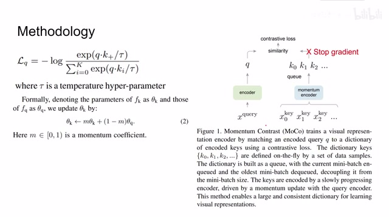
00:01:43–00:03:13 · 画面 004MoCo 的原理其实非常简单，就是我一个 batch 里面的图像还是经过不同的图像增强的手段，左边这只我们叫它 query，右边这只我们叫它 key。那么 query 放到 encoder 里面，key 也过一个 encoder，不过这个 encoder 是 momentum encoder，然后我们就得到了它们的 representations。这里的 key 的 representation 不仅有这一个 batch 里面的 representation，它还有之前的 batch。
里面他保存了一些 representation，所以呢我们看到这里其实维护了一个队列，这样的好处呢就是比起像 simclr 这种一个 batch 内相互做 contrastive learning，我这个 batch 呢通过很少的代价获得了更多的 negative samples。那么还是两个 representation 之间来计算相似度来得到这个 contrastive loss，那这个 contrastive loss 呢就是我们熟悉的 info nce。
那么分子部分呢就是 query 和它对应的 key 它的相似程度，那么分母部分呢就是 query 和其他所有的 key 它们对应的相似程度的和。那么这里呢这个套就是我们的 temperature，它呢用来控制我们这个 loss 它的分布嘛，这个是那么这就是 contrastive loss 的部分。那像这个 momentum encoder 大家非常熟悉了，就是我在更新了 query 的 encoder 之后呢。
我并不是直接的把它复制到我们的 key 的 encoder 里面，而是我以一定的比例去更新这个 key，好了，那么我们结合做了提供的伪代码来看一下，那么首先在最开始的时候 query encoder 和我们的 momentum encoder 也就是 key 的 encoder 它们的参数呢是一样的，都初始化好了，对一个 sample 来说。
00:03:13–00:03:57 · 画面 005
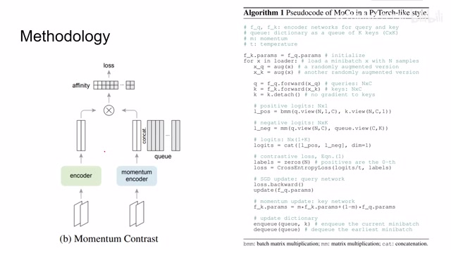
00:03:13–00:03:57 · 画面 005做不同的两种图像增强的措施得到 query 的 sample 和 key 的 sample 分别送到两个 encoder 里面然后因为我们的 key 呢是不需要计算梯度的所以呢这里 detach 当然你在实际写的时候呢你要在这里写 with torch.no_grad 这样子呢 key 的这一支它从一开始计算的时候就不会计算这个 gradient 那么它会节省更多的内存得到这个 query 和 key 之后呢我们首先来看对应样本之间它们的相似程度
00:03:57–00:04:02 · 画面 006
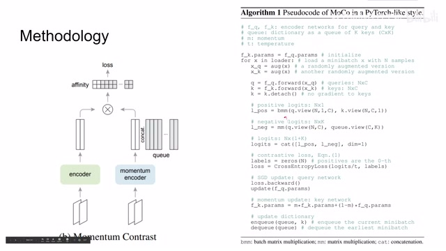
00:03:57–00:04:02 · 画面 006这里呢把这个 query 和 key 变了个形做这个 batch matrix multiplication 也就是说我 query 的 vector 和对应的 key 的 vector 它们做内积那么最后呢这样子呢就产生 n 个这个内积的值这个呢就是我们的 positive samples 那么 negative samples 呢就是我所有的 query 和之前维护的这个队列中的 key
00:04:02–00:04:12 · 画面 007
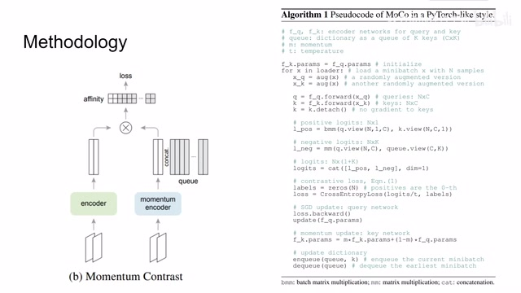
00:04:02–00:04:12 · 画面 00700:04:12–00:04:56 · 画面 008
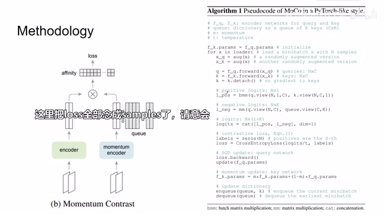
00:04:12–00:04:56 · 画面 008也就是这个灰色的部分一起做个矩阵乘法其实就是相当于你用一个 vector 去和矩阵中的每一个 vector 去做内积嘛那得到这么一个矩阵这个是我们的 negative samples 那把我们 positive samples 和 negative samples 串起来来计算这个我们形容 softmax 加 cross entropy 的这个 loss 啊那可以看到其实非常巧妙一点我们这个 logits 的矩阵呢它有 n 行 k 加 1 列那么这个矩阵的第一列是我们的 positive sample 那么随后的 k 列呢都是这个样本和 negative samples 它们的相关程度这里呢你直接告诉 cross-entropy loss 第一列也就是 index 为 0 的这个列呢就是我们希望它是 positive 的 samples 就很巧妙的把我们想要的 loss 呢给实现了这里呢是我们的 hyperparameter temperature 然后呢由 loss 来做传递更新一下我们的 encoder network 的这个参数
00:04:56–00:05:21 · 画面 009
00:04:56–00:05:21 · 画面 009然后呢再用 momentum 去更新一下这个 momentum encoder 那么这样子呢网络的训练就结束了那么最后呢记得维护一下我们的这个 key 的队列这里呢我们把这个 batch 中计算的 key 的队列加进去然后呢把最早一个 batch 的样本呢给它弹出来那么以上呢就是 moco 的实现方法好的我们直接来看结果首先是大家非常熟悉的退春然后加一层 linear layer 做这个 classification
00:05:21–00:05:22 · 画面 010
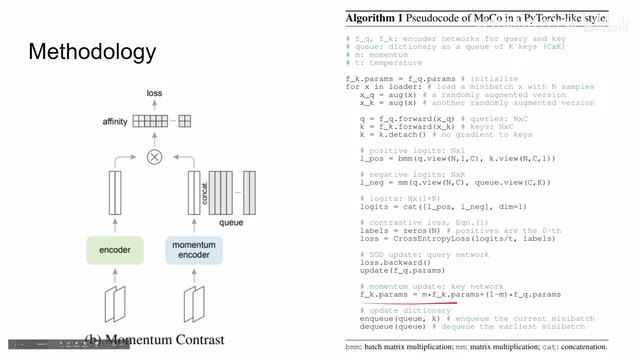
00:05:21–00:05:22 · 画面 01000:05:22–00:05:28 · 画面 011
00:05:22–00:05:28 · 画面 01100:05:28–00:05:30 · 画面 012
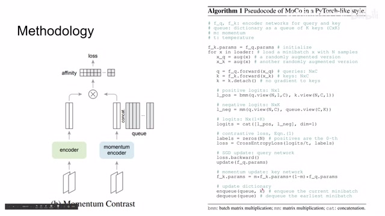
00:05:28–00:05:30 · 画面 01200:05:30–00:05:31 · 画面 013
00:05:30–00:05:31 · 画面 01300:05:31–00:05:35 · 画面 014
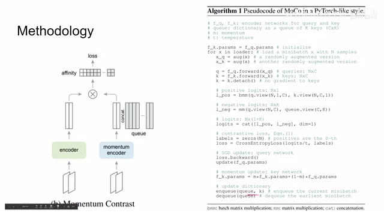
00:05:31–00:05:35 · 画面 01400:05:35–00:05:38 · 画面 015
00:05:35–00:05:38 · 画面 01500:05:38–00:07:31 · 画面 016
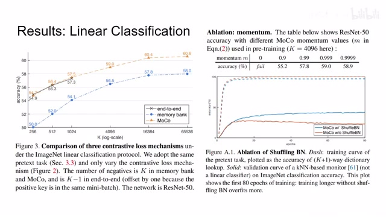
00:05:38–00:07:31 · 画面 016然后对比一下之前我们 end-to-end 还有 memory bank 随着 negative samples 的增加模型的效果肯定是越来越好这里作者也测试了不同的 momentum 我应该以怎么样的速度去更新 momentum encoder 我们可以看到这些结果这里其实是一个非常有意思的实验就是 shuffling batch normalization 作者说其实包括之前的论文也有汇报我们的 batch normalization 其实会损害这个 unsupervised learning 的会阻碍我们的模型去学到一个好的 representation 那么可能一个原因呢就是因为我们的这个 network 在做 batch normalization 的时候呢它是应用到了一个 batch 中所有样本的信息那么在这个 normalization 的过程中呢不同样本之间的信息呢可能就会泄露给对方了这样呢就使我们的 contrastive loss 呢更容易达成
那么为了克服这个困难呢，作者就使用了这个 shuffling batch normalization。那么具体来说呢，是因为作者在多块 GPU 上训练了这个模型，那么他就是在每一个 GPU 上做 batch normalization。那么同时呢，因为我有两只嘛，一只是 key，一只是 query，我的 query 呢是打乱顺序之后送到不同的 GPU 里的，也就是说呢，到最后呢，我对应的 query 和 key 呢，它不是从同一个 batch normalization 里面出来的。
那么这个技巧呢，就称之为这个 shuffling batch normalization。那么可以看到了，如果我们使用这个 linear layer，它这个虚线的标记，可以看到这两个的区别呢，还不是很明显，因为 linear layer 呢，毕竟还是很强的一个模型。但是呢，如果我们用 KNN 作为分类器，也就是实现的部分，我们可以看到很明显的有没有这个 shuffling batch normalization 是对性能有影响的。好的，那么好的，那么下面就是调达前任工作的环节。
00:07:31–00:07:35 · 画面 017
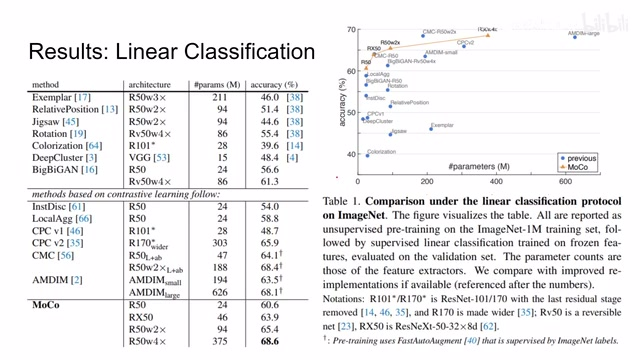
00:07:31–00:07:35 · 画面 017本文提出的方法肯定是 autopalm 之前的所有的方法了，至少是当时之前所有的方法了。那么从这个模型复杂度和性能的表现来看，还是比较优秀的。那么当然呢，除了这个 classification，还有 transfer learning。那么这里呢，作者在这个 PASCAL VOC 上做这个目标检测，是从不同的模型培训出来的 MoCo，对比之前的 N2N 还有 Memory Bank 这样的方法。
00:07:35–00:07:39 · 画面 018
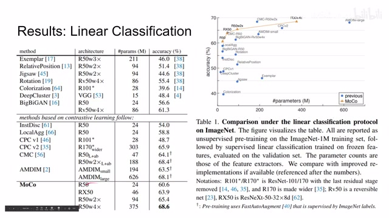
00:07:35–00:07:39 · 画面 01800:07:39–00:07:40 · 画面 019
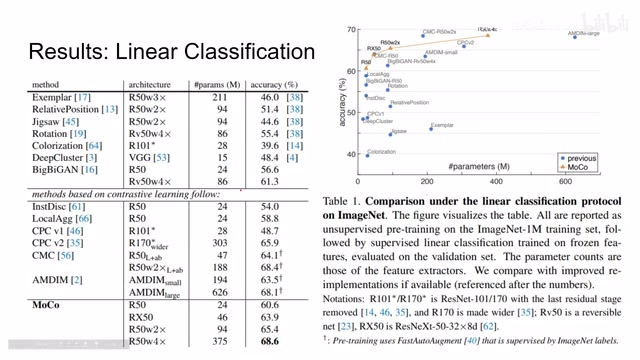
00:07:39–00:07:40 · 画面 01900:07:40–00:07:45 · 画面 020
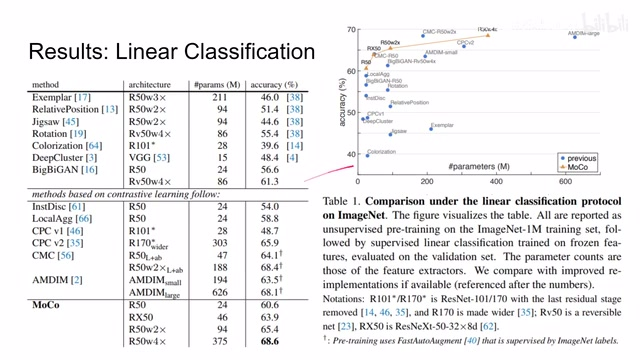
00:07:40–00:07:45 · 画面 02000:07:45–00:07:46 · 画面 021
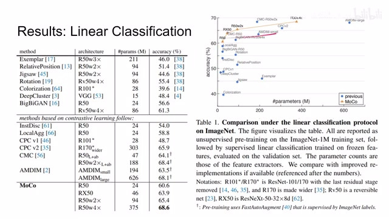
00:07:45–00:07:46 · 画面 02100:07:46–00:07:57 · 画面 022
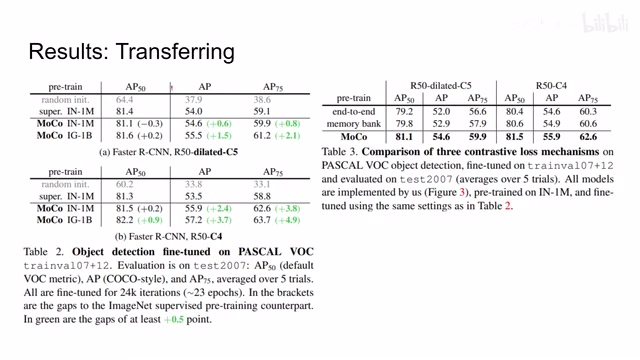
00:07:46–00:07:57 · 画面 02200:07:57–00:07:58 · 画面 023
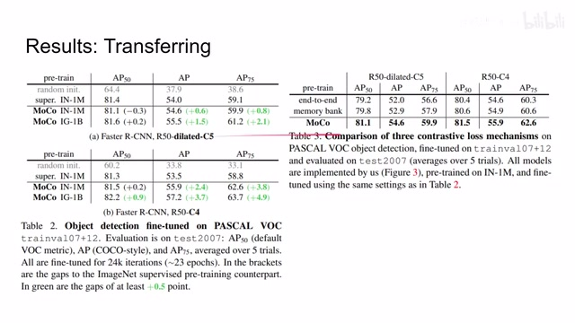
00:07:57–00:07:58 · 画面 02300:07:58–00:08:05 · 画面 024
00:07:58–00:08:05 · 画面 024对吧，得到了结果，那肯定本文提出的方法是 outperform 其他的方法的。这里呢，还有 coco 数据集上作者汇报的结果，那么作者还汇报了吊打前面方法的这些结果，感兴趣的话你可以去圆文中查看。那么以上呢，就是 moco 第一个版本。那么随着这个 SimCLR 他的提出呢，作者呢针对 moco 呢又做了一些小部分的改进，这就是我们的 MoCo V2，也就是我们第二篇论文。
00:08:05–00:08:25 · 画面 025
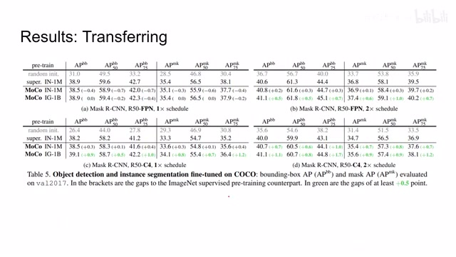
00:08:05–00:08:25 · 画面 02500:08:25–00:09:48 · 画面 026
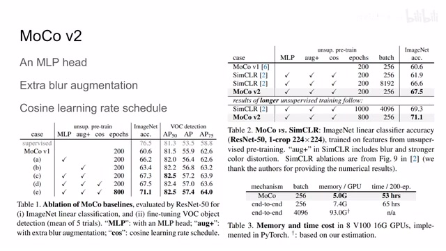
00:08:25–00:09:48 · 画面 026这其中呢，包括三条改进，第一条呢就是我原来的这个 momentum encoder 包括这个 query encoder 里面，它是这个前面的 encoder 加上一层 fully connected layer 的这么一个构造。那么作者说我再加一层 fully connected layer，把它后面的那一层 head 呢变成一个 mlp，那么这个呢是第一个改进。那么第二个改进呢就是我在做图像增强的时候，我增加了额外的这个模糊这种增强。
就是我把图像变模糊嘛，作为一种样本扩增的手段。那么第三个呢就是这个 cos learning rate，就是我在训练的时候呢，我的 learning rate 是一个 cos function，这个 learning rate scheduling 这些东西。那么把这三点加上去之后呢，它们的性能表现是怎么样的呢，坐在这里做了实验，这个呢是魔口的 baseline 对吧，然后呢我不同的实验，那么显然加上这些东西之后，随着训练次数的增加，那么性能的表现越来越好。
然后呢，对比了同样使用这些 trigger 的 SimCLR，那么本文优势呢就是 batch size 小，因为在本文中维护了一个队列，这个队列中呢只放这个 key representation，那显然它是又节省内存而且还可以增加很多 negative samples，这是一个非常讨巧的方法。最后呢，这里还有对比之前的 end to end，本文使用的内存也好，这个训练的时间也好，都是有很大优势。好的，那么以上就是我对这篇论文的简单的分析。
00:09:48–00:09:52 · 画面 027
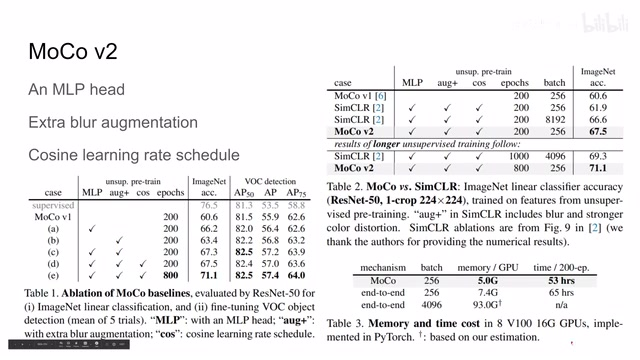
00:09:48–00:09:52 · 画面 02700:09:52–00:09:53 · 画面 028
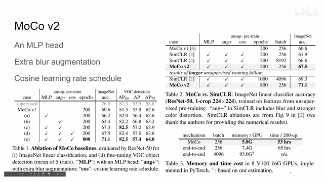
00:09:52–00:09:53 · 画面 02800:09:53–00:09:59 · 画面 029
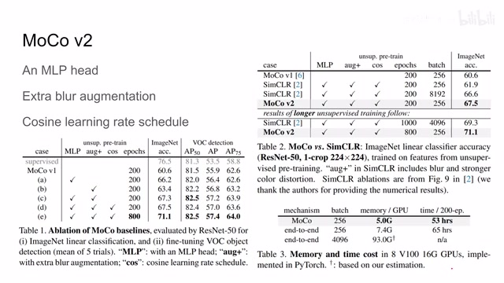
00:09:53–00:09:59 · 画面 029还是非常推荐感兴趣的朋友去查看原文中的各种细节，那么感谢您的收看，再见。
转写与来源说明 · 0 个自动复核提示
保留 23 个原始语音片段，0 个片段触发自动复核提示。提示仅用于定位可能的术语、重复或识别问题，不等于已确认错误。
讲解画面为源视频截图（640×360），不是可编辑 PPT 文件。全片按每秒 2 帧扫描内容变化，逐步展开页保留；连续动画保留代表画面。清晰度受源视频限制。
原视频：paper/合集_2026-10-16_表征学习/[论文简析]MoCo Momentum Contrast Learning[1911.057222003.04297].mp4
SHA-256：e061e70ad6dab5eb6462cd00f56465f4c92fd9c77edc2eac50804481ee0bb707
全文按视频语音与画面制作。原论文可从上方链接下载；完整资料包保留全文、原始逐字稿、字幕和校对记录。